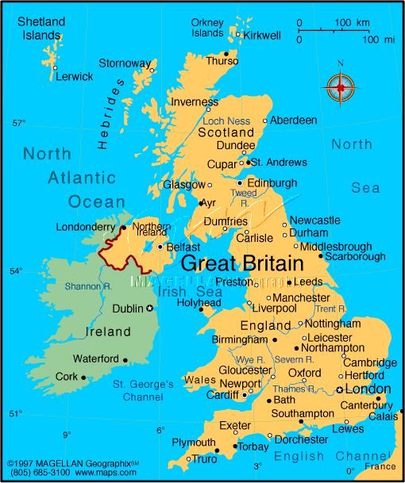

1. Brien, D. (ed.) (1992). Dictionary of British Sign Language/English. London: Faber and Faber.
2. From http://www.bjorkasen.vgs.no/bcd/bcd1-99/Signs.html (Some British signs), which is not longer extant.
1. Brien, D. (ed.) (1992). Dictionary of British Sign Language/English. London: Faber and Faber.
2. From http://www.bjorkasen.vgs.no/bcd/bcd1-99/Signs.html (Some British signs), which is not longer extant.
David Bar-Tzur

Flag: World flag database.
Map: Maps.com - "search" for country, then "Digital Map Graphics").
For a quick, interesting resource for facts about this and other countries,
try Mystic Planet - The New Age directory of Planet Earth.
1. Brien, D. (ed.) (1992). Dictionary of British Sign Language/English. London: Faber and Faber.
2. From http://www.bjorkasen.vgs.no/bcd/bcd1-99/Signs.html (Some British signs), which is not longer extant.